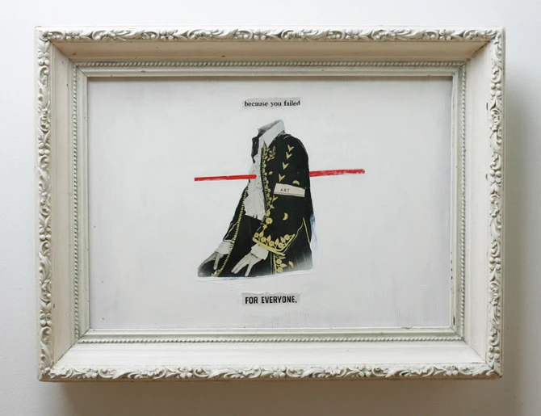
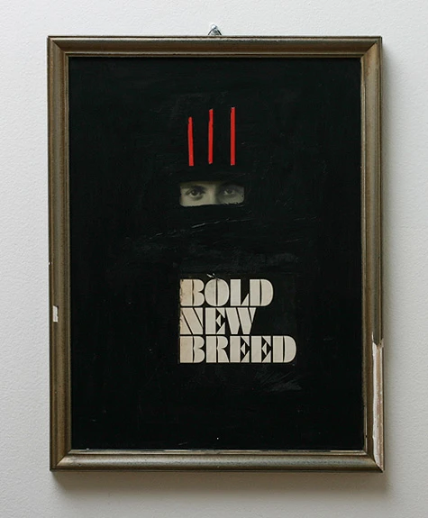
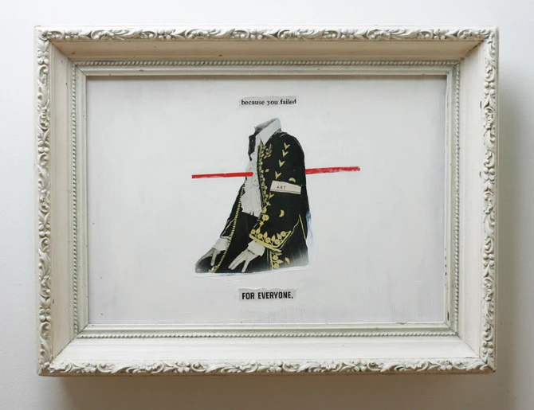
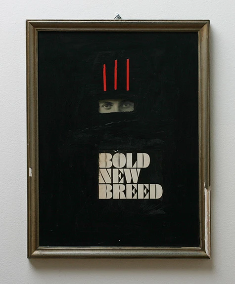
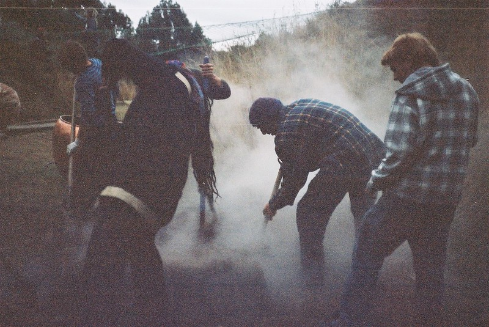
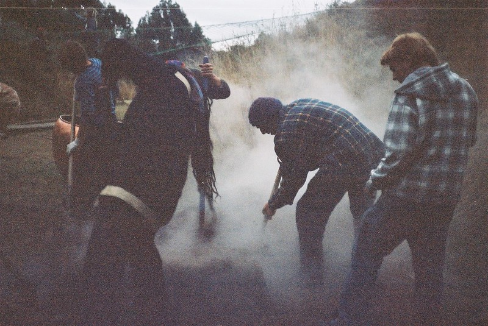

About the Artist
My name is John Finnell, and I create art under the name Sundry Sullen. I’ve been making collage on and off for over 20 years, weaving together timeworn and contemporary imagery to explore emotion, transformation, and transcendence. A lot of my work ends up as a mix of order and fracture, fragments that come together into something otherworldly, sparking reflection and mystery and touching on the shifting boundaries of self and no-self.
Beyond art, I practice acupuncture and holistic medicine in Oceanside, CA, surf whenever I can, and am building toward Nervous System Reset retreats in Central America that bring together art, healing, and community. If you’re curious about new art or the retreats I’m putting together, drop your email below. I email very infrequently and only for big updates, so you won’t get spammed.
Vintage Collage Book
Chaos Series
Faceless Series
Poster Series
One Hundred Pages
Works
2005–2017 — Mixed media, found objects, glue, acrylic, oil, ink
 



Collaborations
2005–2017 — Mixed media, wood, paper, glue, acrylic paint, found objects
Created with Vincent Pacheco and WAFA Collective
Photography
2010 — New Zealand, 35mm Film, Vintage 1980s Yashica
 
